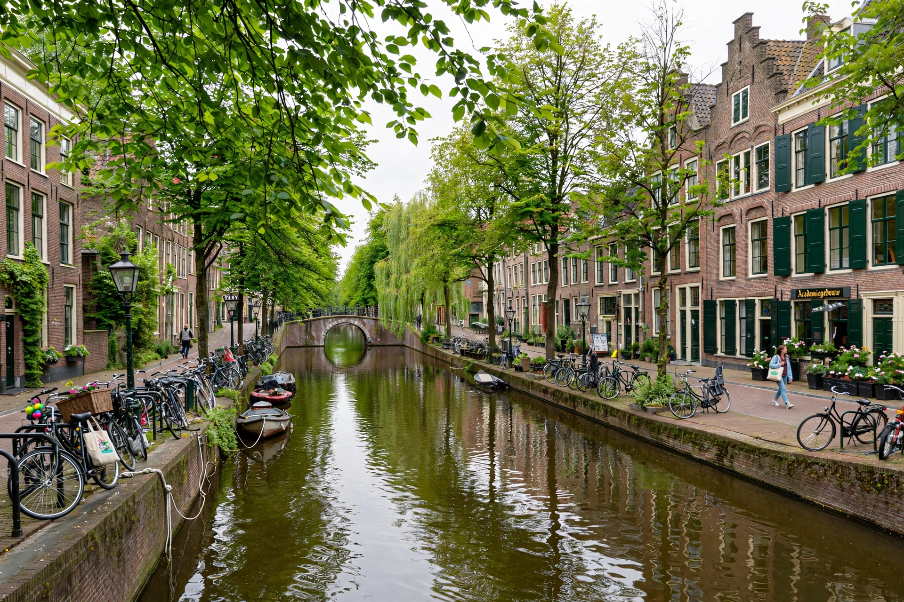

| Province | South Holland |
|---|---|
| Country | Netherlands |
| Population | ~125,000 (city) |
| Known for | Leiden University (founded 1575) |
Leiden is a city and municipality in the province of South Holland, Netherlands, known for its historic canals, 17th-century architecture, and Leiden University, the oldest university in the country, founded in 1575 by William of Orange as a reward for the city's defence against Spanish forces.
Leiden grew around a castle at the confluence of the Oude and Nieuwe Rijn rivers. During the Dutch Revolt, the city endured the Spanish sieges of 1573–74, relieved on 3 October 1574 — a date still celebrated annually as Leidens Ontzet with herring, white bread, and hutspot. The relief flood was achieved by breaching the dikes, allowing the Dutch fleet to sail over the flooded fields.
In the 17th century Leiden prospered as one of Europe's largest cloth-making centres, and was the birthplace of Rembrandt van Rijn. The Pilgrims who later founded Plymouth Colony lived in Leiden from 1609 to 1620.
Leiden is home to the Rijksmuseum van Oudheden (antiquities), the National Museum of Ethnology, Naturalis Biodiversity Center, and the Hortus Botanicus, one of the world's oldest botanical gardens, where tulips were first cultivated in Europe.